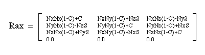

Return to previous page | Return to menu | Go to next page
void
Matrix function
Rotate around any axis through the origin
void slRotAX(vctx , vcty , vctz , anga)
FIXED vctx ;
FIXED vcty ;
FIXED vctz ;
ANGLE anga ;
vctx Rotation axis vector X component vcty Rotation axis vector Y component vctz Rotation axis vector Z component anga rotation angle value
Add rotation around an arbitrary axis that passes through the origin.
Be sure to specify the rotation axis vector that determines the rotation axis as a unit vector.
The rotation matrix is represented as shown below.
None
The following figure shows a rotation matrix for rotating around an arbitrary axis.

Note) Nx, Ny and Nz are XYZ components of the rotation axis vector.
S and C are Sin and Cos into which the angle value “anga” is substituted.
Reference: Chapter 4 Coordinate transformation
slRotAX